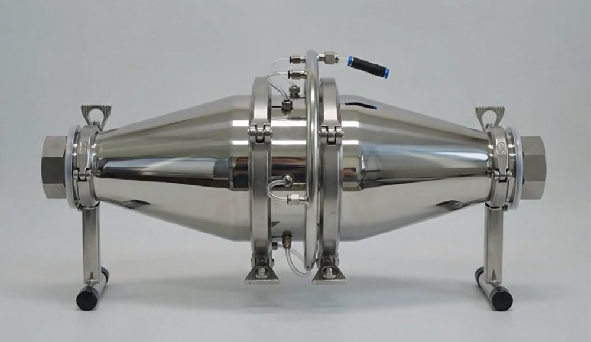
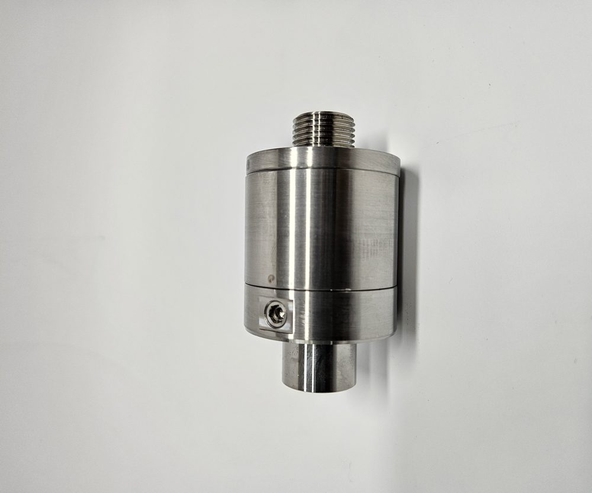
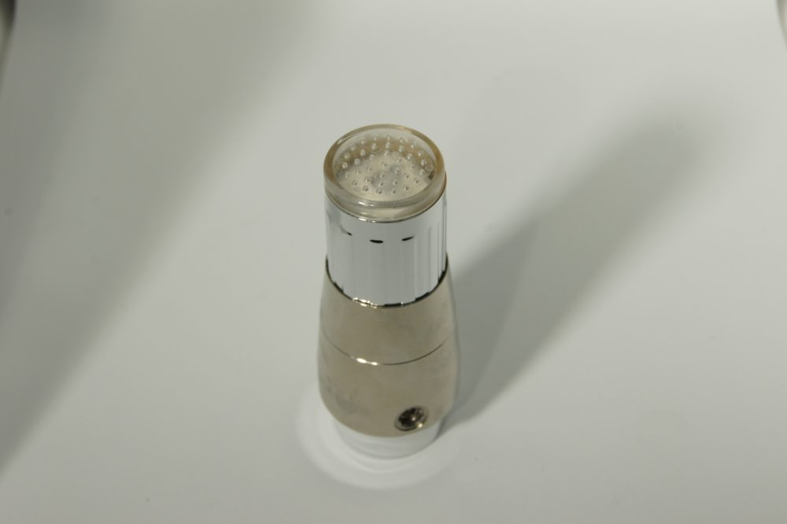

IMB Family Brands
㈜아이엠비는 산업용 소재와 응용 기술을 기반으로 고객사의 생산성 향상, 품질 안정화, 원가 절감에 기여하는 기술 중심 기업입니다. 제품 공급을 넘어, 현장 조건에 맞는 실질적인 해결책을 제안합니다.
3개
핵심 사업 영역
16종
i-UFB 제품 모델
8+
적용 산업 분야
i-UFB 엔진
초미세기포 발생 장치 · 스테인리스 정밀 가공
IMB Family Brands
물속에 1μm 미만의 초미세기포를 안정적으로 분산시키는 기술입니다. 자체 개발 노즐·엔진으로 농업, 축산, 수산, 세척·살균, 수질 개선까지 폭넓게 적용합니다.
자동차 흡음 소재, 산업용 부직포·필터, 기능성 복합 소재까지 — 요구 물성과 공정 조건에 맞는 소재를 제안합니다.
제품만으로 해결되지 않는 문제를 함께 풉니다. 공정 조건과 품질 이슈를 분석해 적합한 소재·장비·적용 방식을 검토합니다.
소형 배관용 엔진부터 대용량 멀티 노즐까지, 전 제품을 스테인리스 정밀 가공으로 직접 설계·제작합니다.

i-UFB 엔진
1.5i4T부터 4i40T까지 5종 라인업으로, 처리 용량에 따라 선택할 수 있습니다. 양식장·농업용수·산업 세척 등 대용량 수처리 현장에 적용됩니다.

i-UFB 노즐
15A·20A 배관 규격에 맞춘 인라인 타입으로, 기존 설비에 간편하게 설치할 수 있습니다. 유량별 5L·8L·10L·20L 모델과 황동니켈(BN)·SUS316L 스테인리스(S) 재질을 선택할 수 있습니다.

생활용 라인 — FW 시리즈
FW24 세면대용(24mm), FWP6A 정수기용, Bubblio 샤워기 등 일상 공간에서도 초미세기포의 세정 효과를 경험할 수 있는 소형 라인업입니다.
전체 라인업 보기고객의 생산 조건, 품질 기준, 원가 구조를 함께 고려해 현실적으로 적용 가능한 솔루션을 제공합니다.
실제 산업 현장에서 작동하는 기술을 중요하게 생각합니다. 생산 조건과 원가 구조까지 고려한 제안으로 적용 실패 비용을 줄입니다.
자동차 소재, 필터, 기능성 부직포, 초미세기포 응용까지 — 여러 산업에서 쌓은 경험으로 문제를 다각도로 분석합니다.
표준 제품을 일방적으로 공급하지 않습니다. 사용 목적과 현장 조건에 따라 최적의 사양과 적용 방식을 함께 찾아갑니다.
자동차 부품·소재
산업용 필터·클린룸
농업 수질·생육 개선
축산 악취·수질 관리
수산 양식 환경
산업 세척·살균
건축 완충·흡음재
친환경·재활용 소재
적용성 검토부터 샘플 테스트, 양산 적용까지 — 부담 없이 문의해 주세요.
평일 09:00 – 18:00 · FAX 043-750-7538